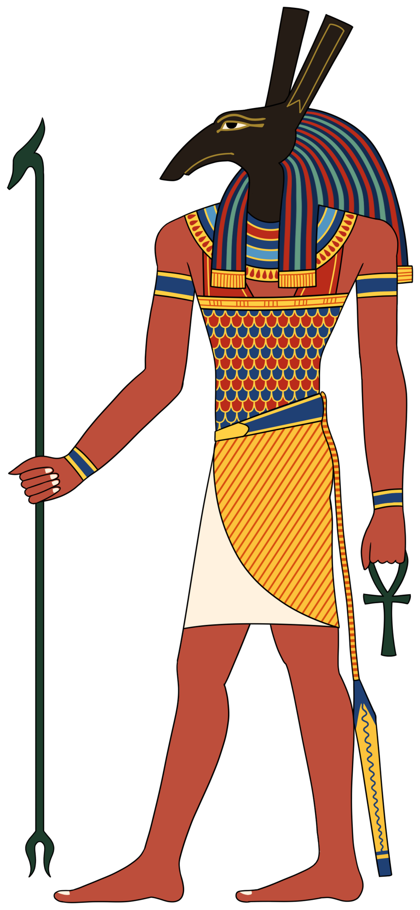

Сет
убийца Осириса · защитник ладьи Ра · тот, кто каждую ночь поражает гарпуном змея Апопа

Происхождение и образ
Сет (егип. Stẖ, у греков Сетх, в погребальных текстах — «Сутех») — младший сын бога земли Геба и богини неба Нут, брат Осириса, Исиды и Нефтиды, входящий в гелиопольскую Эннеаду. Согласно гелиопольской космогонии, он родился, выскочив из бока матери Нут; по другой версии, местом его рождения был район оазиса Файюм.
Сет — бог красной пустыни, дешрет, антитеза чёрной плодородной Кемету. Его стихия — песчаные бури, жара, грозы, всё то, что рвёт порядок изнутри; его цвет — рыже-красный, а небесный образ — планета Меркурий, которую называли «Сет в вечерних сумерках, бог в утренних». Смерть и разрушение вписаны в его сферу, но образ его сложнее, чем «злодей»: в раннем Египте Сет был покровителем царской власти наравне с Гором, владыкой воинской доблести и — главное — защитником солнца. Из всех богов только он по силе мог противиться змею хаоса Апопу в ночном путешествии ладьи Ра, и только он стоял в её носу, готовый поразить гарпуном чешуйчатую спину, которая каждую ночь пыталась поглотить солнце.
Женой Сета считалась Нефтида — та самая, что, по одной версии, зачала от Осириса Анубиса; в гиксосские времена его свиту пополнили боги завоевателей. Сет издревле ассоциировался с мужской силой и воинской мощью — и именно этот, а не демонический, облик мы видим в ранних его памятниках.
Иконография
Главный знак Сета — «зверь Сета» (сꜣ): существо с длинным закруглённым хоботообразным носом и прямыми торчащими ушами, не сводимое ни к одному известному животному. Его иероглиф служил детерминативом к словам «дикий», «злой», «свирепый», образ Сета-зверя известен уже по самым древним памятникам додинастического Верхнего Египта, когда у этого знака было другое, славное, значение. В арабских текстах похожее создание упоминалось как «салава».
В антропоморфных образах Сет — человек с головой, напоминающей голову осла или трубкозуба: длинный пятастый нос, длинные вертикальные уши, рыже-красная грива и жгучие красные глаза, окрашенные в цвет пустынного песка — цвет самой смерти. Животные формы, которые ему приписывали, — крокодил, гиппопотам, даже «гиппопотам в шкуре крокодила», змей, чёрная свинья, антилопа, окапи (жираф); известен и миф, где Сет в облике чёрной свиньи плюёт в очи Гору во время одной из битв тяжбы — оттого свиньи стали считаться нечистыми, хотя в глубокой древности и сама Нут изображалась свиньей с поросятами-звёздами. Главным из его животных считался осёл; в руках у бога — скипетр уас и анх.
Одна из любопытных особенностей его иконографии — отсутствие единого «правильного» зверя: египтологи до сих пор спорят, какое именно животное имел в виду художник, рисуя голову Сета. Возможно, в этом и есть суть: бог, которого невозможно свести к одному образу, — сам бунт против порядка.
Культ и мифы
Уже в эпоху Накада I (3800–3600 до н. э.) на резных предметах из слоновой кости появляется изображение Сета — тогда он ещё божество металлов и покровитель Верхнего Египта, без тёмных черт. В додинастические времена за власть боролись сторонники Сета и Гора; победа осталась за Гором, чьё имя вошло в титулатуру объединителя, и с тех пор, когда двух богов изображали вместе, Гор неизменно стоял впереди. В Древнем царстве Сет снова был у власти: в «Текстах пирамид» он — защитник царя, а в титулах фараонов II династии союз имён Сета и Гора означал само слово «царь».
Далее — великий перелом. Осирис, создавший цивилизацию, вызвал ревность младшего брата; в ранней версии Сет убил брата, застав его врасплох; в поздней — действовал в союзе с семидесятью двумя заговорщиками и сундуком-ловушкой на праздничном пиру. Забрав трон, Сет потом сам нашёл и разрубил тело брата на части (в версиях — 14, 16 или 18) и разбросал их по Дельте. Тяжба Гора и Сета тянулась, по одному из вариантов, восемьдесят лет: Сет вырвал у племянника око, Гор кастрировал дядю, а отрезанная нога Сета была прикована золотыми цепями к северному небу, где её охранял гиппопотам — обращённая Исида. Суд богов вынес приговор: побеждённого Сета, обернувшегося пантерой, боги решили сжечь, а Анубис снял шкуру с Сета и надел на себя, а затем отправился в святилище Осириса и калёным железом выжег на шкуре свой знак — так «зверь Сета» стал знаком смерти и загробного мира.
Но даже проигравший процесс бог не был исключён из мира. С конца Древнего царства его культ постепенно демонизировался — из великого защитника Ра он превращался в грозное божество, которое, однако, египтяне по-прежнему не считали просто «злым»: это был необходимый противовес, властелин плохой погоды и сил, без которых порядок немыслим. Особенно почитали его Рамессиды как владыку воинской доблести: фараоны Рамессидской эпохи носили имя «Сети» (Сети I, Сетнахт), Сету давался эпитет «могучий», а в договоре Рамсеса II с хеттами Сет упоминается наряду с хеттскими богами. При гиксосах, занявших Дельту (XV–XIV вв. до н. э.), Сет был отождествлён с их богом Ваалом, и его культ как главного бога процветал в столице захватчиков Аварисе.
Полная демонизация наступила позже: с Третьего переходного периода и Позднего времени, а особенно в эпоху Птолемеев, когда культ Гора был вознесён особенно высоко, Сет стал всё более явным символом зла, ненавистным злодеем, источником вселенского зла — рядом с Апопом и в противостоянии со всей осирисической парой. Появились ритуальные тексты вроде «Ритуала победы над Сетом», где жрецы символически били, жгли и закалывали изображения бога. И всё же его ночная служба не отменялась: пока Сет стоял в носу ладьи Ра с гарпуном наперевес (так его показывают на папирусе Жумиляка), солнце было в безопасности — зло, которому мир обязан своим сохранением.
Нубт и звери пустыни
Главным культовым центром Сета была Нубт — город на Ниле, известный сегодня как Ком-Омбо: здесь стоял один из немногих храмов, посвящённых именно ему (на притолоке храма сохранилось изображение Сета времён Тутмоса I), и здесь, как сообщает папирус Анастаси II, Рамзес III построил себе укреплённый дворец. Другие центры — Гипселе, северо-восточная Дельта и особенно оазисы: в оазисах Дахла и Харга бог оставался живым даже тогда, когда на Ниле его уже боялись. В XXVI династии он стал явным олицетворением зла — но храмы оазисов продолжали ему служить: демонизация в Египте никогда не была тотальной: даже у самого проклятого бога оставались последователи.
Главным священным животным Сета был осёл — животное, которое сами египтяне считали нечистым, и которое они тем самым отдали в распоряжение владыки пустыни. Весь звериный мир дикой земли — крокодил, гиппопотам, змей, чёрная свинья, антилопа, жираф — был приписан этому богу: каждый облик напоминал о том, что за плодородным краем Кемета начинается дешрет, и там царит Сет.